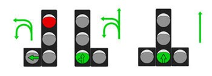
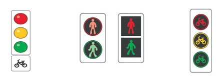
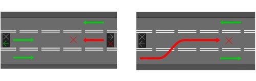
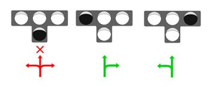
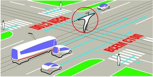
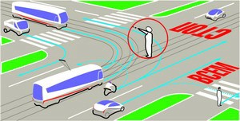

В светофорах применяются световые сигналы зеленого, желтого, красного и бело-лунного цвета.
В зависимости от назначения сигналы светофора могут быть круглые, в виде стрелки (стрелок),
силуэта пешехода или велосипеда и Х-образные.
Светофоры с круглыми сигналами могут иметь одну или две дополнительные секции с сигналами в виде зеленой стрелки (стрелок), которые располагаются на уровне зеленого круглого сигнала.
Круглые сигналы светофора имеют следующие значения:
ЗЕЛЕНЫЙ СИГНАЛ разрешает движение;
ЗЕЛЕНЫЙ МИГАЮЩИЙ СИГНАЛ разрешает движение и информирует, что время его действия истекает и вскоре будет включен запрещающий сигнал (для информирования водителей о времени в секундах, остающемся до конца горения зеленого сигнала, могут применяться цифровые табло);
ЖЕЛТЫЙ СИГНАЛ запрещает движение, кроме случаев, предусмотренных пунктом 6.14
Правил, и предупреждает о предстоящей смене сигналов;
ЖЕЛТЫЙ МИГАЮЩИЙ СИГНАЛ разрешает движение и информирует о наличии нерегулируемого перекрестка или пешеходного перехода, предупреждает об опасности;
КРАСНЫЙ СИГНАЛ, в том числе мигающий, запрещает движение.
Сочетание красного и желтого сигналов запрещает движение и информирует о предстоящем включении зеленого сигнала.
Сигналы светофора, выполненные в виде стрелок красного, желтого и зеленого цветов, имеют то же значение, что и круглые сигналы соответствующего цвета, но их действие распространяется только на направление (направления), указываемое стрелками. При этом стрелка, разрешающая поворот налево, разрешает и разворот, если это не запрещено соответствующим дорожным знаком.
Такое же значение имеет зеленая стрелка в дополнительной секции. Выключенный сигнал дополнительной секции или включенный световой сигнал красного цвета ее контура означает запрещение движения в направлении, регулируемом этой секцией.

Если на основной зеленый сигнал светофора нанесена черная контурная стрелка (стрелки), то она информирует водителей о наличии дополнительной секции светофора и указывает иные разрешенные направления движения, чем сигнал дополнительной секции.
Если сигнал светофора выполнен в виде силуэта пешехода (велосипеда), то его действие распространяется только на пешеходов (велосипедистов). При этом зеленый сигнал разрешает, а красный запрещает движение пешеходов (велосипедистов).
Для регулирования движения велосипедистов может использоваться также светофор с круглыми сигналами уменьшенного размера, дополненный прямоугольной табличкой белого цвета размером 200х200 мм с изображением велосипеда черного цвета.

Для информирования слепых пешеходов о возможности пересечения проезжей части световые сигналы светофора могут быть дополнены звуковым сигналом.
Для регулирования движения транспортных средств по полосам проезжей части, в частности по тем, направление движения по которым может изменяться на противоположное, применяются реверсивные светофоры с красным Х-образным сигналом и зеленым сигналом в виде стрелы, направленной вниз. Эти сигналы соответственно запрещают или разрешают движение по полосе, над которой они расположены.
Основные сигналы реверсивного светофора могут быть дополнены желтым сигналом в виде стрелы, наклоненной по диагонали вниз направо или налево, включение которой информирует о предстоящей смене сигнала и необходимости перестроиться на полосу, на которую указывает стрела.
При выключенных сигналах реверсивного светофора, который расположен над полосой, обозначенной с обеих сторон разметкой 1.9, въезд на эту полосу запрещен.


Для регулирования движения трамваев, а также других маршрутных транспортных средств, движущихся по выделенной для них полосе, могут применяться светофоры одноцветной сигнализации с четырьмя круглыми сигналами бело-лунного цвета, расположенными в виде буквы “Т”. Движение разрешается только при включении одновременно нижнего сигнала и одного или нескольких верхних, из которых левый разрешает движение налево, средний — прямо, правый — направо. Если включены только три верхних сигнала, то движение запрещено.
Круглый бело-лунный мигающий сигнал, расположенный на железнодорожном переезде, разрешает движение транспортных средств через переезд. При выключенных мигающих бело- лунном и красном сигналах движение разрешается при отсутствии в пределах видимости приближающегося к переезду поезда (локомотива, дрезины).
Сигналы регулировщика имеют следующие значения:
РУКИ ВЫТЯНУТЫ В СТОРОНЫ ИЛИ ОПУЩЕНЫ:
со стороны левого и правого бока разрешено движение трамваю прямо, безрельсовым транспортным средствам прямо и направо, пешеходам разрешено переходить проезжую часть;
со стороны груди и спины движение всех транспортных средств и пешеходов запрещено.

ПРАВАЯ РУКА ВЫТЯНУТА ВПЕРЕД:
со стороны левого бока разрешено движение трамваю налево, безрельсовым транспортным средствам во всех направлениях;
со стороны груди всем транспортным средствам разрешено движение только направо;
со стороны правого бока и спины движение всех транспортных средств запрещено;
пешеходам разрешено переходить проезжую часть за спиной регулировщика.

РУКА ПОДНЯТА ВВЕРХ:
движение всех транспортных средств и пешеходов запрещено во всех направлениях, кроме случаев, предусмотренных пунктом 6.14 Правил.
Регулировщик может подавать жестами рук и другие сигналы, понятные водителям и пешеходам. Для лучшей видимости сигналов регулировщик может применять жезл или диск с красным сигналом (световозвращателем).
Требование об остановке транспортного средства подается с помощью громко-говорящего устройства или жестом руки, направленной на транспортное средство. Водитель должен остановиться в указанном ему месте.
Дополнительный сигнал свистком подается для привлечения внимания участников движения.
При запрещающем сигнале светофора (кроме реверсивного) или регулировщика водители должны остановиться перед стоп-линией (знаком 6.16 "Стоп"), а при ее отсутствии:
на перекрестке — перед пересекаемой проезжей частью (с учетом пункта 13.7 Правил), не создавая помех пешеходам;
перед железнодорожным переездом — в соответствии с пунктом 15.4 Правил;
в других местах — перед светофором или регулировщиком, не создавая помех транспортным средствам и пешеходам, движение которых разрешено.
Водителям, которые при включении желтого сигнала или поднятии регулировщиком руки вверх не могут остановиться, не прибегая к экстренному торможению в местах, определяемых пунктом 6.13 Правил, разрешается дальнейшее движение.
Пешеходы, которые при подаче сигнала находились на проезжей части, должны освободить ее, а если это невозможно — остановиться на линии, разделяющей транспортные потоки противоположных направлений.
Водители и пешеходы должны выполнять требования сигналов и распоряжения регулировщика, даже если они противоречат сигналам светофора, требованиям дорожных знаков или разметки.
В случае если значения сигналов светофора противоречат требованиям дорожных знаков приоритета, водители должны руководствоваться сигналами светофора.
На железнодорожных переездах одновременно с красным мигающим сигналом светофора может подаваться звуковой сигнал, дополнительно информирующий участников движения о запрещении движения через переезд.